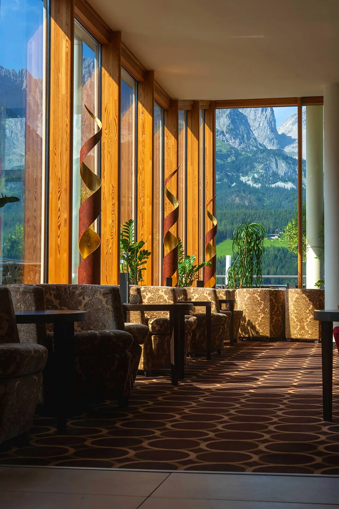
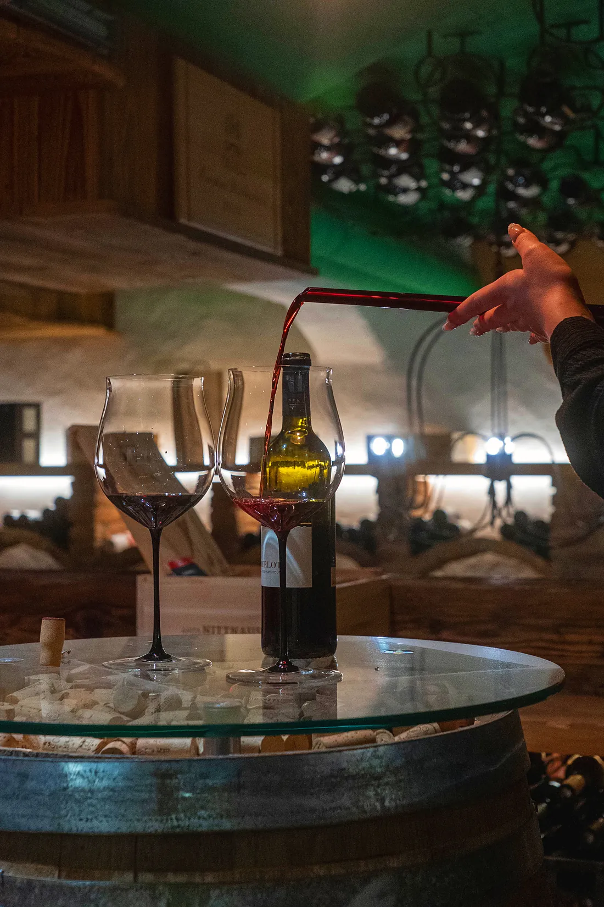
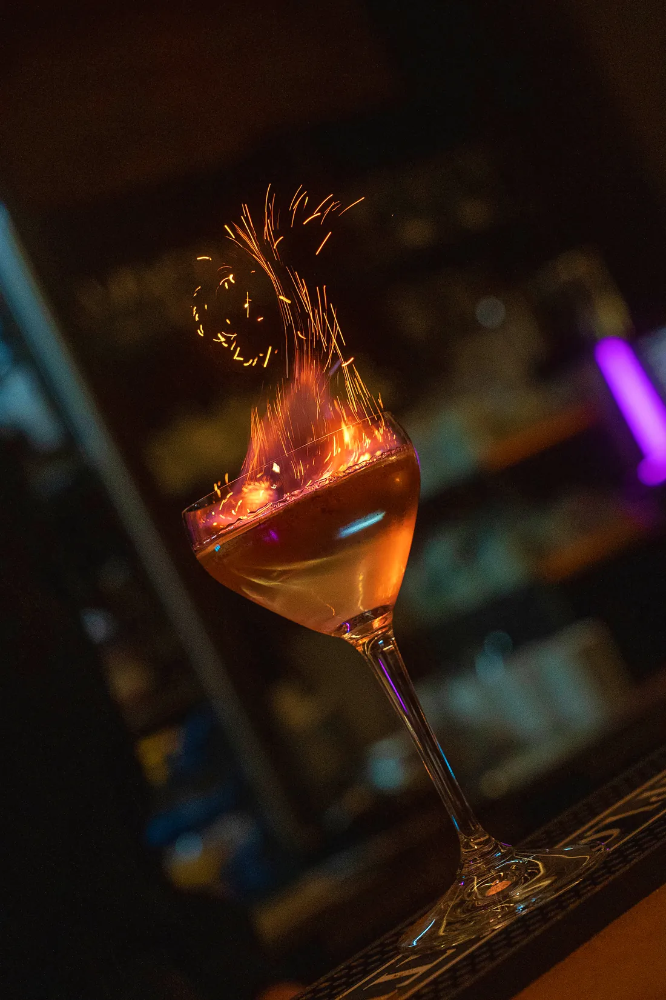

Waar de berg
naar binnen komt.
Een viersterren-superior hotel op de helling boven Ellmau, met een sky pool die recht op de Wilder Kaiser is gericht.
- Horizontale merkfilm
- Verticals voor eigen kanalen
- Beeldbank: suites, spa, tafel, terrein
- Volledige gebruiksrechten
De Wilder Kaiser is de reden dat gasten komen. Maar een berg op een foto is alleen een vorm — het wordt iets anders zodra je hem ziet vanaf een ligstoel, door een raam, over de rand van een bad. De opdracht was dus eenvoudig: film de berg nooit alleen.
Er is rond de stille uren gedraaid. Vroege ochtend op het pooldek, voordat de eerste gasten er zijn. Gouden uur vanuit de lucht. En de avond voor het interieur — wanneer de lampen het overnemen en de kamers warm worden.
Opgeleverd als horizontale merkfilm, een set verticals voor de eigen kanalen van het hotel, en een beeldbank met suites, spa, tafel en terrein. Volledige gebruiksrechten, zonder nabetaling per plaatsing.





Een berg op een foto is een vorm.
Gezien vanaf een ligstoel is het een reden om te boeken.